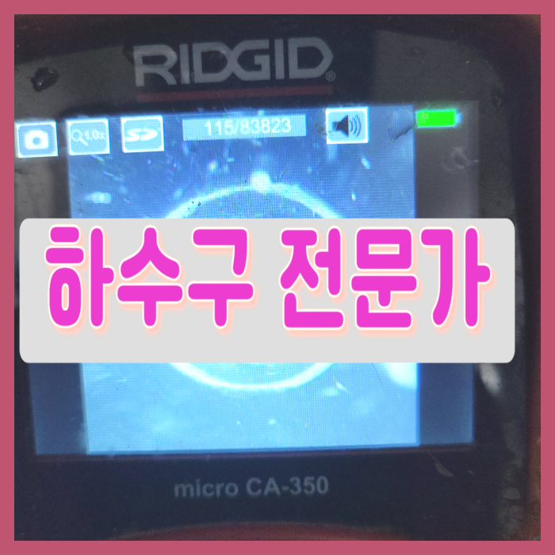
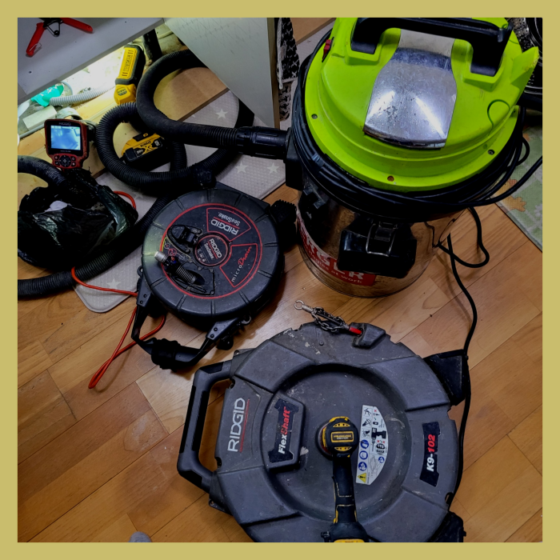
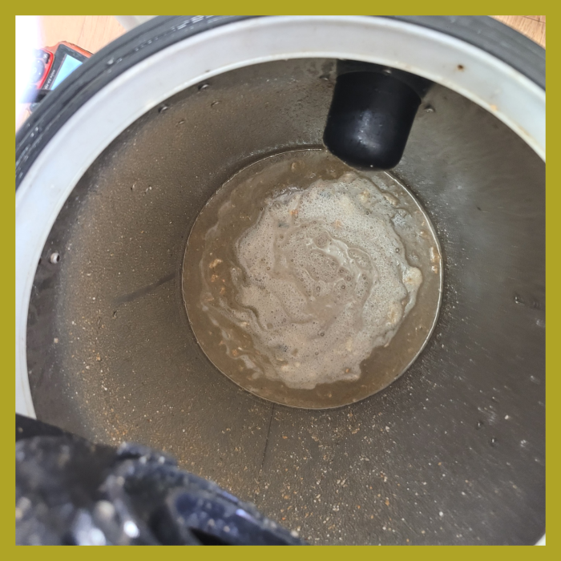
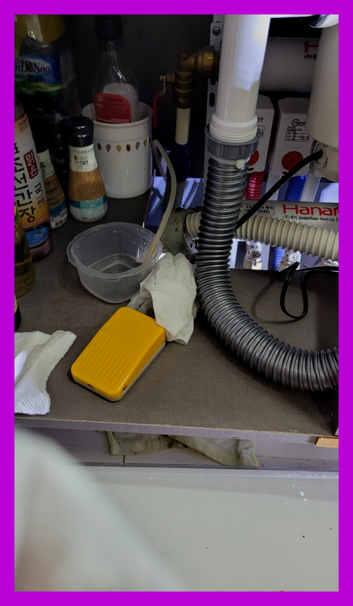
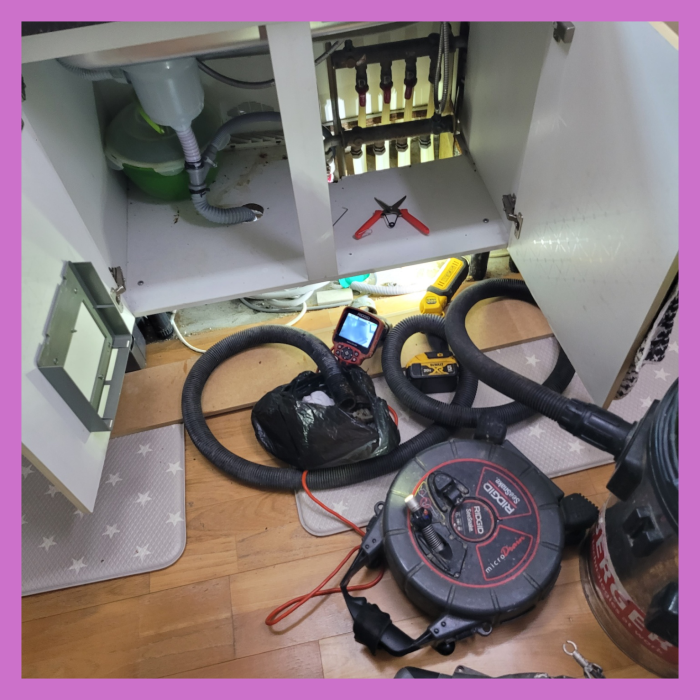
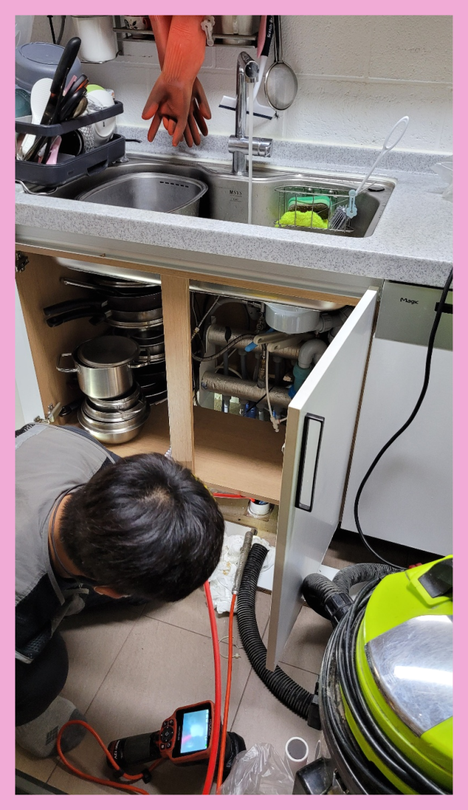
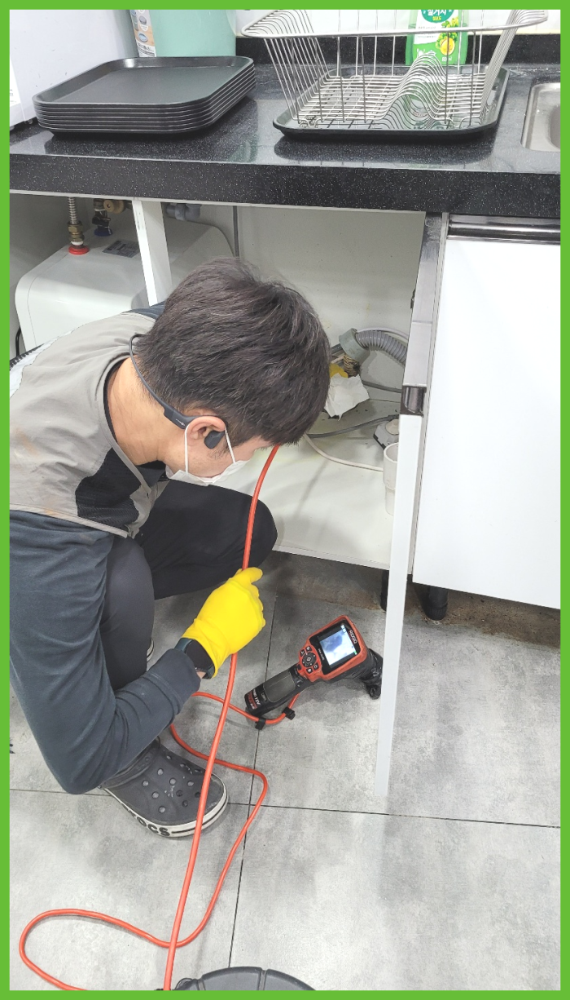

🏠 시흥 거모동 씽크대배수관막힘 목감동 배수구청소 뚫는곳 설비
시흥 싱크대막힘 전문 시공 후기

📋 작업 개요
- 위치: 시흥
- 서비스 유형: 싱크대막힘, 변기막힘, 하수구막힘, 배관막힘, 역류해결, 뚫는업체, 배관청소, 고압세척
- 작업 일시: 2024. 2. 17. 22:53
- 업체명: 하수구수사대 (010-5615-2118)
🔍 문제 상황
안녕하십니까^^
설비전문업체 "하수구수사대"를 찾아주셔서 고맙습니다^^
저희는 배관막힌 곳이 있으면 어디든지 빠르고 신속하게 방문하여 확실하게 뚫어드리는 하수구 업체로 많은 문의를 받고 해결해 드리고 있습니다. 흔히 하수구가 막히게 되는 것은 일상에서 흔하게 일어나지 않기에 갑작스럽게 퇴수막히게 되면 많이 당황스러울실 수밖에 없을것입니다.
시흥 거모동 씽크대배수관막힘 목감동 배수구청소 뚫는곳 설비
가정내에서 일상을보내려면 필히이용되어야하는것이 하수관이죠 이런요인으로 하수가 배설이 용이하지않으면 시공기사를 출동시키는것도 많아지고있는데요. 간단한방법으로 잔여물을부시는 제품을 구입해서이용하니 배수가안되는상태가 잦아지고있답니다

🔎 원인 분석
💡 전문가 진단: 시흥 거모동 씽크대배수관막힘 목감동 배수구청소 뚫는곳 설비
상황을 직접 보기 전에 미리 정한 뒤 방문한 것이기 때문에 출동할 때 가지고 나가는 퇴수 장비들도 그다지 많지 않을 것입니다. 이런 이유 때문에 보통 이상의퇴수 막힘은 뚫어낼 수 없어 실패한 현장으로만 남게 되는 것입니다.
당시 방문 현장 같은 경우에는 배수구막힘으로까지 며칠동안 싱크대에 거의 손을 대본 적이 없었기 때문에, 상당히 진한 순간이지 않았을까 사전에 예측하여 볼 수가 있었습니다. 배수구막힘을 처리함에 있어 기본이라 할 수 있는 석션 장비는 물론이고, 배수구배관의 내부까지 관찰할 수 있는 내시경 카메라, 그 곳에 좋은 분쇄력을 보유한 플렉스 샤프트 장비까지 모두 챙겼는데요.
다른곳을 살펴보면 비용에 대한 어떠한 설명도 없이 뚫고난 후 너무나 큰 돈을 책정하는 업체도 더러 있는것 같으니 조심 하시는 좋을것 같네요. 전문장비를 갖춘 곳이라면 문제 상태에 따라 적절한 작업이 진행될 거고 현장 기술자의 경우 사용할 장비를 단번에 정해야 해요.
여러번 강조 드리고 싶은 부분은 스스로 시도하시는것도 좋지만 제대로 된 책임감 넘치는 곳으로 알아보셔야 해요. 하수막힘 진단해 보고 쉬운 현장인지 실력자가 아니면 알기가 쉽지 않답니다. 급하다고 해서 무리하게 시도해버리면 더욱 나빠질수 있어요.
현장에 도착하면 다양한 퇴수배관 문제와 더불어 다양한 증상, 원인, 난이도 등 차이를 보이게 됩니다. 때문에 일정을 짜는 것이 무엇보다 중요할 수밖에 없습니다. 일정이 꼬이면 곧장 뚫지 못해 사용에 어려움을 겪게 됩니다.

🔧 작업 과정
막혀있던 부분을 뚫은 다음 다시 내시경 카메라 최신장비를 투입하여 확인해 보았습니다. 확실히 처음과 달리 깔끔한 배수관배관이 눈에 들어왔습니다. 이를 고객님께도 확인시켜 드렸습니다. 내시경 카메라 장비를 이용하면 고객님께서도 직접 문제 상황을 볼 수 있어 안심할 수 있습니다.
특히 주방에서는 사용하고 남은 음식물 찌꺼기나 기름을 버리게 되는 일이 많은데 이런 이물질들이 배수구 처리 시설까지 흘러가지 못한다면 배관을 막히게 하는 대표적인 원인이 됩니다. 배수구내부 상태를 직접 확인하기 어려운 만큼 만약 수상한 정황이 보인다면 빠르게 배수구전문 업체의 도움을 구하시길 바랍니다.
실제로 배수석션 작업까지 마치고 나서 내시경 검수를 진행해보니 초기에 빨갛게 나오던 내시경 화면이 푸르게 변한 것을 알 수가 있었는데요.
스프링 장비는 회전하는 힘은 강력하지만 샤프트기와 같이 헤드 끝에 분쇄 전용장비가 있는 것은 아닙니다. 그 때문에 물이 흐르는 길을 확보하는 용도로는 충분하지만 내부 잔여물을 제거하는 스케일링 효과는 기대할 수 없습니다. 또한 배수구배관을 손상하지 않도록 조심해야 합니다. 반면에 샤프트기는 배관 손상 걱정이 없습니다.
베테랑의 해결책과 전에알려드린 물건들과 무엇이틀린지 한번상상을 해보시기바래요.배수구 안을 육안으로확인가능하기에 기본적인것부터 다른것을 볼수있습니다. 느낌으로만 부어버려서 없애는것에 의심하게됩니다.
따라서 저희는 하수배관의 크기와 이물질의 양을 미리 꼼꼼하게 체크한 후 적합한 샤프트기를 선택하여 이물질을 분쇄하였습니다. 얇은 노즐을 가졌기에 어떤 하수배관에서 투입이 가능하며 중간에 꺾이는 구간이 있다고 하더라고 유연하게 구부러지기에 모서리에 있는 이물질까지 깔끔하게 제거할 수 있습니다.
하수도배관이나 하수구가 외부에서 시작하여 각 집으로 나누어지는 형태로 만들어져 가정집이나 가게에서 갑자기 물이 잘 흐르지 않는 현상이 단순히 건물 안의 문제가 아닐 수도 있기 때문입니다. 그러므로 하수도배관의 안을 확인 가능한 내시경 장비를 기본으로 고압 세척기나 샤프트 등 필수적인 설비를 잘 갖추고 있는지 알아보셔야 합니다.
고객님은 상황의 심각성을 인지하지 못하고 급한 데로 옷걸이를 찾아서 하수구로 마구 찔러보셨다고 하는데요, 뚫릴 기미가 보이지 않았고, 겨우겨우 먼지 같은 이물질만 빼낼 수 있었다고 합니다. 그래서 안되겠다 싶어 전문설비업체를 검색하였고 저희에게 문의를 해주신 거였지요.


✅ 작업 완료
자잘하게 남은 고착물들은 기름때를 더 빨리 끼게 만들기에 세척할 때 하수도내시경 장비로 확인하면서 잔여물을 남기지 않게 하는 것도 중요한 부분 중 하나인데요, 기름 이물질은 세대 내 하수도배관에서도 많이 발견되며 마지막 잔여물도 하나도 남기지 않고 말끔하게 치워서 다시는 막히는 일이 발생하지 않도록 해드렸습니다.
#하수구막힘 #하수구뚫음 #하수구역류 #씽크대막힘 #싱크대역류 #오수관막힘 #하수구청소 #욕실하수구막힘 #변기막힘 #하수구뚫는비용 #싱크대수리 #화장실막힘




⚠️ 주방 싱크대 배관 막힘 예방 수칙
- ✅ 기름기가 묻은 식기나 프라이팬은 설거지 전 키친타올로 반드시 기름때를 닦아내세요.
- ✅ 주기적으로 싱크대 개수대에 뜨거운 물을 가득 받아 한 번에 내려 배관 내부 기름을 씻어내세요.
- ✅ 배수구 거름망을 미세한 필터로 사용하시고 음식물 찌꺼기가 틈으로 새어 들지 않게 관리하세요.
- ✅ 베이킹소다와 식초를 뜨거운 물과 함께 일주일에 한 번씩 부어주면 배관 살균과 막힘 예방에 좋습니다.
💡 핵심 정리
- 확실한 장비 작업(내시경 점검 및 샤프트 스케일링)으로 원인을 뿌리 뽑습니다.
- 작업 후 1년 이내에 동일한 부위 재발 시 100% 무상 A/S 서비스를 보장합니다.
- 서울 · 경기 · 인천 전 지역에 24시간 언제든 긴급 출동할 수 있도록 항시 대기 중입니다.
❓ 자주 묻는 질문 (FAQ)
🚨 시흥 싱크대막힘 문제로 고민이신가요?
정확한 원인 진단과 확실한 시공으로 재발 없는 해결을 약속드립니다.
24시간 긴급 출동 | 서울 · 경기 · 인천 전지역 | 1년 내 재발 시 무상 A/S